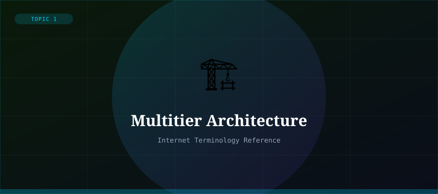

What is Multitier Architecture?
Multitier architecture (also called n-tier architecture) is a client-server architecture in which the application is divided into separate logical layers, each responsible for a specific function. The most common form is the 3-tier architecture, which separates an application into the Presentation Tier, Application (Logic) Tier, and Data Tier.
This separation of concerns makes applications easier to develop, maintain, scale, and secure. Changes to one tier can be made independently without disrupting the others.
The Three Tiers
- Tier 1 — Presentation (Client): The user interface layer — what users see. This is the web browser, mobile app, or desktop GUI.
- Tier 2 — Application (Logic): The business logic layer — processes data, applies rules, and coordinates between the UI and database.
- Tier 3 — Data: The database layer — stores, retrieves, and manages persistent data using systems like MySQL, PostgreSQL, or MongoDB.
Benefits of Multitier Architecture
Scalability: each tier can be scaled independently. Security: the database tier is never directly exposed to users. Maintainability: developers can work on different tiers simultaneously.
Reusability: the same logic tier can serve multiple presentation layers (web, mobile, API). This architecture underpins most modern web applications, cloud services, and enterprise software.
Beyond 3 Tiers
Modern applications sometimes use 4 or more tiers — for example, adding a caching layer, an API gateway, or a microservices layer. The concept generalises to any number of tiers as long as each has a clearly defined responsibility.